Topological Games [LECTIO]
Giochi di Schmidt
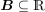 è l’insieme dei numeri badly approximable. ( è badly approximable sse ???)
è badly approximable sse ???)
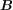 è di misura di Lebesgue nulla e magro.
Alcuni giochi
Per 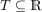 e 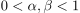, 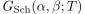 è il gioco logico dove i giocatori I e II giocano intervalli chiusi non vuoti 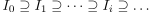 di  tali che
tali che
per ogni  .
.
Il giocatore II vince sse 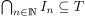. I altrimenti.
Generalizzazione per  spazio metrico completo.
spazio metrico completo.
L’insieme dei tali che  ha una strategia vincente è un
ha una strategia vincente è un  -filtro.
-filtro.
Definizioni di TDI
Un sottoinsieme  di uno spaio topologico è
di uno spaio topologico è
- mai denso in se 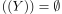
- magro in se è unione numerabile di insieme mai densi;
- comagro in se 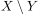 è magro.
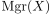 è la famiglia dei sottoinsiemi magri di , chiuso sotto sottoinsiemi e unione numerabile.
Alcuni argomenti accennati
- Spazi di Baire.
- Se di Baire e
 aperto allora
aperto allora  di Baire.
di Baire. - Giochi di Choquet e spazi di Choquet. (Vedi libro di Oxtoby1)
- Strong Choquet Game e spazi di Strong Choquet.
- Proprietà di Baire
- Banach-Mazur Game
- Spazio di Cantor
- Lo spazio 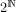 è compatto e omeomorfi all’insieme di tutti i percorsi attraverso ogni finitely branching tree senza nodi terminali.
- è omeomorfo all’insieme di Cantor.
- 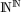 è omeomorfo a 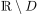, dove 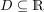 è un insieme numerabile e denso.
- Spazio Polacco
Un insieme 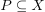 è perfetto se  è chiuso in e senza punti isolati.
è chiuso in e senza punti isolati.
(Teorema di Cantor-Bendixson).
Se è uno spazio polacco e  è chiuso, allora esistono 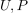 unici tali che 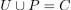; 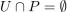 e
è chiuso, allora esistono 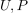 unici tali che 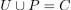; 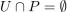 e
- è numerabile (possibilmente vuoto), e aperto in
 ;
; - è perfetto (possibilmente vuoto).
The perfect set game 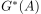
- Gale-Stewart Games
- Alberi e alberi potati
- Se ha la topologia discreta e 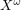 ha la topologia prodotto, allora i sottoinsiemi chiusi di sono esattamente gli insiemi 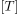, con
 albero potato su .
albero potato su . - Teorema di Gale-Stewart
(Teorema di Martin). Se 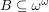 è boreliano, allora 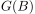 è determinato.
Assumendo AC, questo vale per ogni 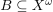.
Si definisce l’assioma di determinatezza per giochi su :
- :
- 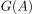 è determinato per ogni 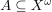.
Se 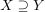 allora 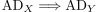.
Con 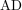 si intende 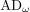 (equivalente anche a 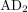).
???
(Teorema di Martin-Woodin). Assumendo 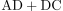: 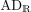 sse Unif.
Unif è la uniformization property in  .
.
Footnotes:
Oxtoby, John C. - Measure and category. ISBN: 0-387-90508-1